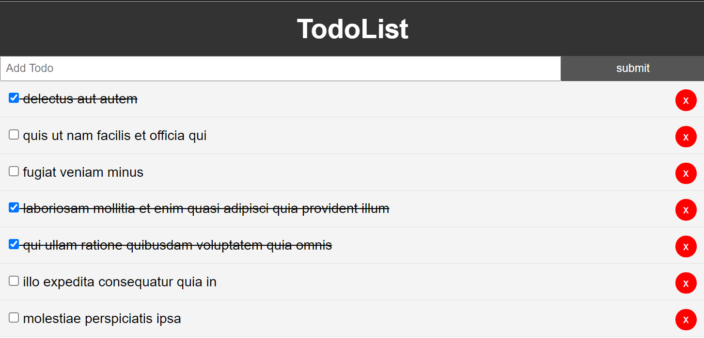
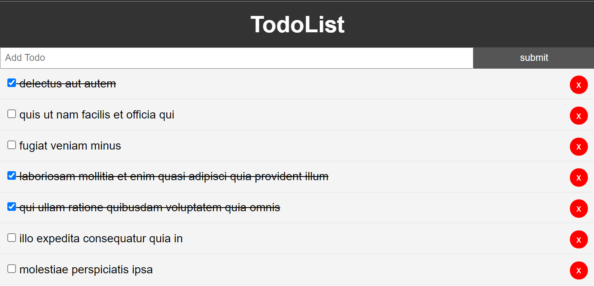

Dag 4, Sept 10, 2021
Props
Dagen var ganske lik tidligere arbeidsdager. Vi fortsatte med å jobbe på prosjektet, og fikk implementert litt funksjonaliteter.
Vi fikk skrive-rettigheter i dummy databasen, slik at vi kunne implementere flere objekter i prosjektet. Foreløbig bruker vi bare data som vi definerer selv,
men senere vil vi bruke mer omfattende data. Vi jobber med å få på plass designet til nettsiden, og har smått begynt å integrere denne databasen.
Vue har mye nytt som vi må lære oss. Idag lærte vi om props. Props, også kalt properties, blir brukt for å sende data fra en parent komponent ned til child komponenter.
Ettersom hele prosjektet består av flere komponenter, ender det opp som en datastruktur som kalles tre (tree). Bildet til høgre illustrerer et tre, der hver node er en
komponent.
Arbeidstimer idag: 6
Arbeidstimer totalt: 26.5
Dag 3, Sept 09, 2021
Komponenter i Vue
Arbeidet med administrasjonsportalen fortsatte idag. Vi begynte dagen med å lage en navigasjonsbar i administrasjonspanelet. Senere koblet vi sammen linkene i
navbaren med de andre sidene ved hjelp av Vue routers. Vi brukte en del tid på dette.
Når dette var gjort, gikk vi videre til å lage en søkeboks, som senere skal kobles til en database. Søkeboksen opprettet vi som en egen komponent. Når man jobber
med Vue, deler man inn nettsiden i flere komponenter som i en helhet blir en nettside. Søkeboksen er en egen fil, med "scoped" css og html, slik at koden bare
gjelder for denne komponenten. Dette gjør prosessen mer oversiktlig. Etter søkeboksen var ferdig brukte vi en databasen i firebase til å hente
diverse objekter, slik at vi kan lage en liste av kategorier. Disse kategoriene listet vi i en dropdown meny. Denne listen er også en egen komponent.
Nettsiden begynner sakte men sikkert å ta form, og vi har allerede lært mye.
Arbeidstimer idag: 7.5
Arbeidstimer totalt: 20.5
Dag 2, Sept 03, 2021
Første arbeidsdag på kontoret
I dag ble vi endelig introdusert til resten av utviklerteamet. Jeg har fått et godt inntrykk av alle sammen,
og hadde alt i alt en fin opplevelse hos Svippin. Jeg og den andre praktikanten ble tatt godt imot, og lærte mye allerede første dagen.
Vi fikk innføring i de forskjellige verktøyene vi skal bruke. Vi skal bruke Firebase til backend, og Vue.js til frontend. Våres arbeidsoppgaver
omhandler for det meste frontend utvikling i Vue. Vi fikk begynne på prosjektet vårt allerede nå. Iløpet av praksisperioden skal vi lage
en administasjonsportal for en applikasjon. Denne appen blir laget til en kunde, og jeg synes det er spennende å få bli
med på utviklingsprosessen.
Jeg og den andre praktikanten er blitt lagt til i prosjektet på Github, og jobber sammen om oppgavene. Idag lagde vi innloggingssiden til portalen
ved hjelp av HTML og CSS. Vi har fått et design på nettsiden slik at vi vet hvordan de vil den skal se ut. Når vi ble fornøgd med koden,
implementerte vi den i Vue, slik at vi kan implementere validering o.l senere. Mye av dagen ble brukt til å lære om rammeverket Vue og alt som
følger med. Vi lærte om Vue Router og Veux, og fikk implementert litt av dette i prosjektet allerede.
Arbeidstimer idag: 7
Arbeidstimer totalt: 13
Dag 1, Sept 02, 2021
 

Introduksjonsdag
Idag var min første dag i praksis. Ettersom kontaktpersonen min var på ferie frem til nå, ble de en litt sen start.
Idag fikk vi tilgang til noen prosjektfiler som vi skal jobbe mer med senere. Vi fikk tilgang til dette slik at vi skulle få et
innblikk i hva vi skal jobbe med fremover. I tillegg skulle vi finne ut hva vi ville lære mer om. Etter diskusjon med en annen
praktikant kom vi frem til at vi ville lære mer om Vue.js som er rammeverket vi vil bruke fremover.
Dagen idag har stort sett gått ut på å sette seg inn i dette.
Det første steget var å installere og sette opp rammeverket. Etter dette var gjort, begynte vi å programmere i Visual Studio Code.
Vi såg videoer på Youtube for å lære om rammeverket, og endte opp med å lage en TodoList (avbildet til høgre).
I morgen skal vi for første gang jobbe på kontoret til Svippin, og møte de andre utviklerene, noe jeg seg frem til.